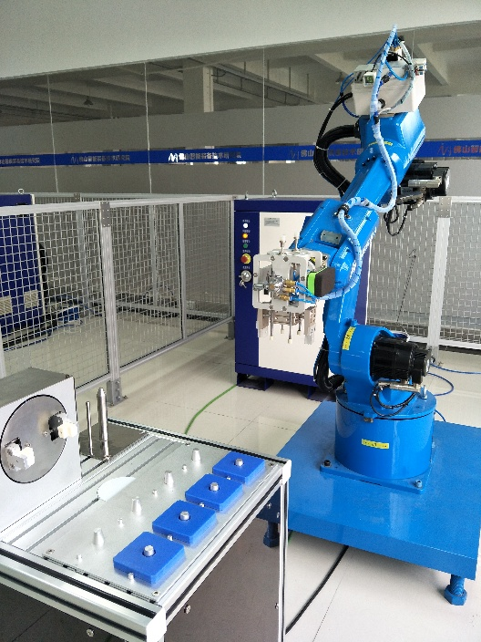

5.2数控车床上下料编程与操作
[任务描述]该数控加工单元主要由一台数控车削中心、8KG工业机器人、一套工作台、两套气动卡具、一条传送带组成，主要结构如图5-1所示。利用HSR-JR612机器人在工作台上拾取工件，将其搬运至机床上，同时将已经加工完的工件取下放置到传送带上，以便于下一工位进行处理。大家需要在此完成程序编写、程序数据创建、目标点示教、程序调试，最终完成整个上下料工作。
图5-1 由机器人完成上下料的数控加工设备
5.2.1子程序调用和增量指令
1、子程序调用指令
指令格式：
指令注释：子程序调用指令将程序控制转移到另一个程序（子程序）的第一行，并执行子程序。当子程序执行到程序结束指令（END）时，控制会迅速的返回到调用程序（主程序）中的子程序调用指令的下一条指令，继续向后执行。
指令说明：
指令结构如下：
指令结构如下：
2、增量指令
指令格式：
指令注释：增量指令将运动指令中的位置数据用作当前位置的增量，即增量指令中的位置数据为机器人移动的增量。
指令说明：
示例：
注释：
（1）当位置数据为关节坐标值时，提供了每个轴的增量数据。
（2）当位置变量（P[i]）作为位置数据时，用户坐标系的基准通过用户坐标系的序号指定，而用户坐标系的序号是在位置数据中指定的。
（3）当位置寄存器作为位置数据时，基准坐标系即为当前用户坐标系。